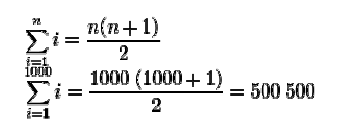

Sumatorias
El sumatorio, la sumatoria, o la operación de suma es un operador matemático que permite representar sumas de muchos sumandos, n o incluso infinitos sumandos, se expresa con la letra griega sigma (Σ), y se define como:

Esto se lee: «sumatorio sobre i, desde m hasta n, de x sub-i».
La variable i es el índice de suma al que se le asigna un valor inicial llamado límite inferior, m. La variable i recorrerá los valores enteros hasta alcanzar el límite superior, n. Necesariamente debe cumplirse que:

Si se quiere expresar la suma de los cinco primeros números naturales se puede hacer de esta forma:

También hay fórmulas para calcular los sumatorios más rápido. Por ejemplo, para sumar los primeros mil números naturales no tiene mucho sentido sumar número por número, y se puede usar una fórmula como esta:
Se debe notar que aunque el término sumatorio se refiere a un operador matemático útil para expresar cierto tipo de suma, no substituye este término a la palabra suma. Se dice: «la suma de dos y tres es cinco», y no «el sumatorio de dos y tres es cinco». Por la misma razón, decir que se realizará, por ejemplo, el sumatorio (o la sumatoria) de unos votos, es notoriamente un disparate. Los operadores de suma son útiles para expresar sumas de forma analítica; esto es, representar todos y cada uno de los sumandos en forma general mediante el «i-ésimo» sumando.
Aquí tienes un video para obtener más información:
Referencia: Sumatorias